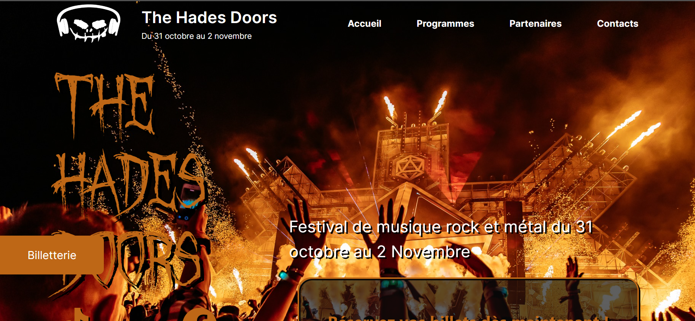
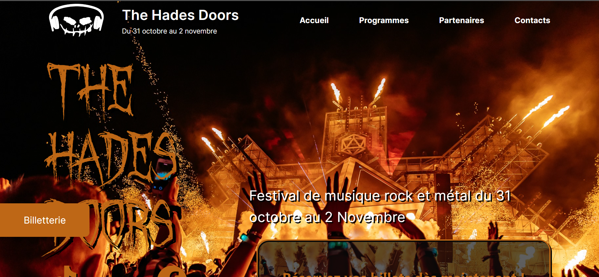

ISIK Erkan
ISIK Erkan
Bonjour, je m'appelle ISIK Erkan
Bienvenue sur mon site !
Je suis actuellement étudiant à l'IUT de Mulhouse en BUT MMI (Métiers du Multimédia de l'Internet). Passionné par le développement web et la création de contenu multimédia, j'acquiers des compétences variées allant du design graphique au développement de sites web interactifs. Mon objectif est de devenir un expert polyvalent capable de réaliser des projets innovants et créatifs. Découvrez certains de mes travaux et expériences ! Si vous aimez ce que vous voyez et avez un projet à coder ou un besoin en design, n'hésitez pas à me contacter.
Rejoignez-moi sur les autres réseaux :

Mes Projets
Voici quelques-uns des projets sur lesquels j'ai travaillé. Chaque projet m'a permis d'acquérir de nouvelles compétences et d'approfondir mes connaissances en développement web et en design multimédia.
 

Détails du Projet 2
Durant le deuxième semestre, j'ai approfondi mes compétences en développement web en utilisant des outils avancés comme SQL et Laragon. Ce projet consistait à créer un site immobilier interactif où les utilisateurs peuvent consulter des informations sur les biens immobiliers disponibles, contacter l'agence et naviguer facilement à travers différentes sections du site.
Technologies et Outils Utilisés :
SQL : Pour gérer la base de données du site, j'ai utilisé SQL. J'ai appris à concevoir et à interroger des bases de données relationnelles pour stocker et récupérer les informations sur les biens immobiliers, les clients et les contacts. J'ai écrit des requêtes SQL pour extraire des données pertinentes.
Laragon : Laragon a été utilisé comme environnement de développement local. Cet outil m'a permis de configurer facilement un serveur local pour héberger le site web et la base de données. Avec Laragon, j'ai pu développer et tester les fonctionnalités du site de manière efficace et rapide.
HTML et CSS : J'ai utilisé HTML pour structurer les pages du site et CSS pour les styliser. J'ai créé des grilles et des mises en page flexibles pour assurer une expérience utilisateur fluide et responsive.
JavaScript : Pour améliorer l'interactivité du site, j'ai utilisé JavaScript. J'ai implémenté un slider d'images pour mettre en avant les propriétés disponibles et j'ai ajouté des fonctionnalités de navigation dynamique.
Fonctionnalités Réalisées :
Page d'accueil interactive : J'ai conçu une page d'accueil attrayante avec un menu de navigation, une section de présentation de l'agence et un slider d'images présentant les biens immobiliers.
Gestion de la base de données : J'ai intégré une base de données MySQL pour stocker les informations sur les biens immobiliers, les clients et les contacts. Les utilisateurs peuvent consulter les détails des propriétés, filtrer les résultats et envoyer des messages via des formulaires de contact.
Formulaire de contact : J'ai créé un formulaire de contact permettant aux utilisateurs de laisser leurs coordonnées et de décrire leurs besoins en matière de biens immobiliers. Les informations saisies sont enregistrées dans la base de données pour un suivi ultérieur.
Projets Réalisés :
Site Web Immobilier : J'ai conçu et développé un site web complet pour une agence immobilière, incluant des pages d'information, un portfolio des biens disponibles et un formulaire de contact fonctionnel.
Ce projet m'a permis de consolider mes compétences en développement web et en gestion de base de données, tout en me familiarisant avec des outils professionnels comme Laragon.
À propos de moi
Pour en savoir plus sur moi et mes expériences, vous pouvez consulter mon CV en cliquant sur le bouton ci-dessous.
Obtenir mon CVContactez-moi
Si vous avez une application que vous souhaitez développer, une fonctionnalité que vous avez besoin de créer ou un projet qui nécessite du code. Je serais ravi de vous aider.